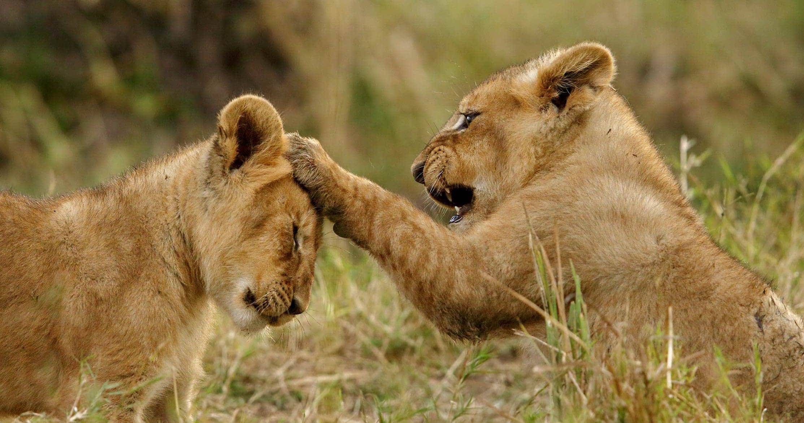
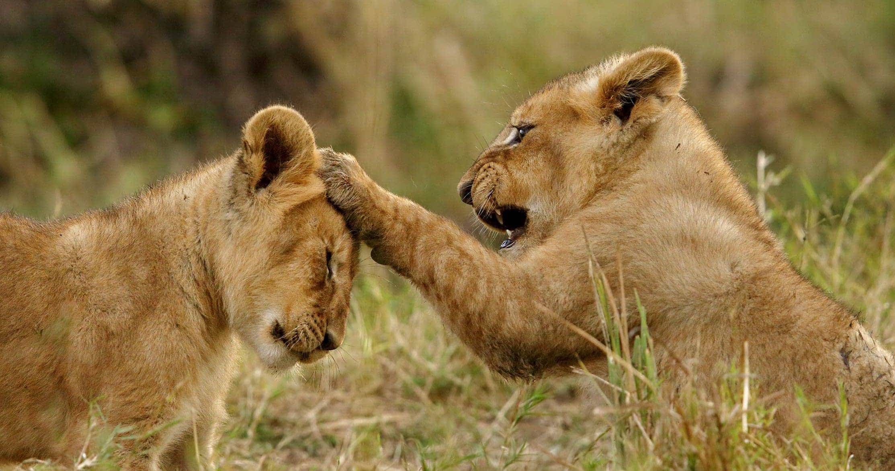

La historia del lugar
La historia del Serengeti se remonta a hace millones de años, cuando esta región era el hogar de animales gigantes como el Paraceratherium, un animal parecido a un rinoceronte. A lo largo de los años, la región ha sido habitada por una variedad de tribus y culturas, incluyendo los masai y los datoga. En 1951, el gobierno de Tanzania creó el Parque Nacional del Serengeti, que se expandió para convertirse en la reserva natural que es hoy en día. La reserva ha sido testigo de una gran cantidad de cambios a lo largo de los años, incluyendo la disminución de algunas especies y la recuperación de otras. La migración anual de animales, que es una de las mayores atracciones de la reserva, también ha sido objeto de estudio y fascinación por parte de los científicos durante décadas. La Reserva Natural del Serengeti es un lugar lleno de historia y de importancia cultural, y sigue siendo uno de los destinos turísticos más populares de África. La historia del Serengeti es larga y fascinante. Los primeros habitantes de la región fueron los cazadores-recolectores, que vivieron en el área durante miles de años antes de que los masai llegaran alrededor del siglo XVII. Los masai vivieron en la región durante varios siglos antes de que los europeos llegaran a fines del siglo XIX. Los europeos llegaron a la región a fines del siglo XIX y comenzaron a explorar la región. En la década de 1920, se creó la Reserva de Caza del Serengeti, una de las primeras reservas de caza de África. En la década de 1950, la reserva se convirtió en el Parque Nacional del Serengeti. El Serengeti se hizo famoso por su gran población de animales salvajes y por la migración anual de más de un millón de ñus y cientos de miles de cebras y gacelas. En 1981, el Serengeti fue declarado Patrimonio de la Humanidad por la UNESCO debido a su rica biodiversidad y belleza natural.
 


La conservación de la vida silvestre en el Serengeti ha sido un tema importante desde el principio. A lo largo de los años, se han llevado a cabo diversas iniciativas de conservación para proteger la vida silvestre en la reserva y garantizar que las futuras generaciones puedan disfrutar de su belleza y biodiversidad. En 2018, se anunció que se estaba construyendo una carretera que atravesaría el corazón del Serengeti, lo que generó preocupación por su impacto en la vida silvestre y la ecología del área. Sin embargo, en respuesta a la preocupación pública, el gobierno de Tanzania anunció en 2020 que había cancelado el proyecto de la carretera.